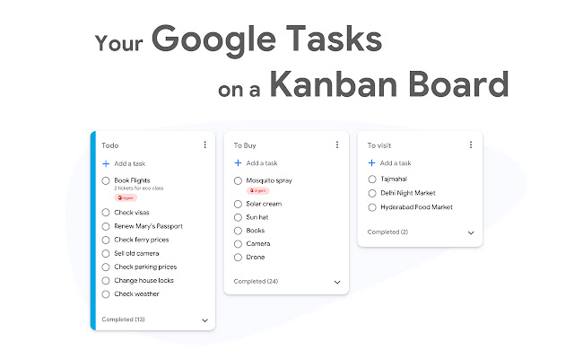
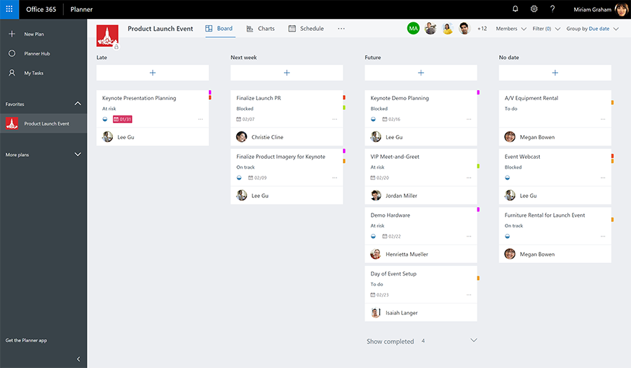
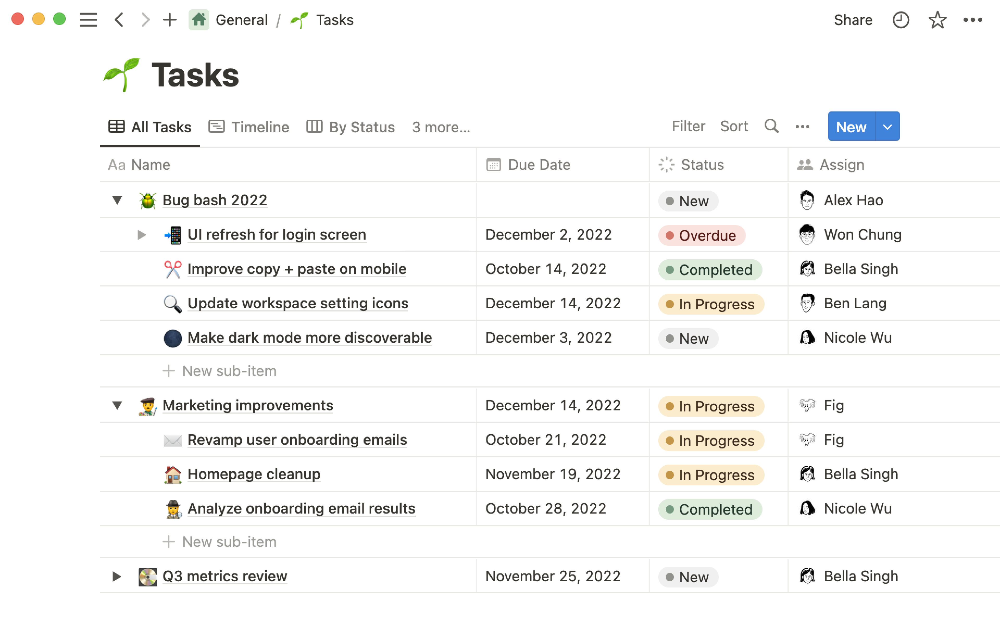
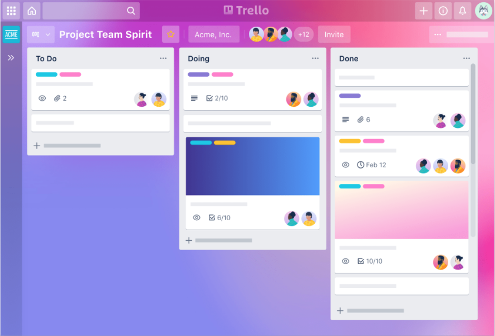
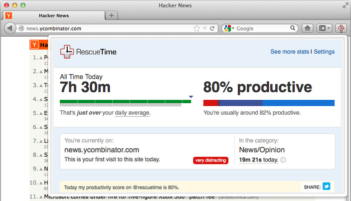

แนะนำแอปพลิเคชัน
ในโลกแห่งการทำงานเรามักจะพบเจอกับปัญหาที่คาดไม่ถึงมากมาย โดยเฉพาะอย่างยิ่งในช่วงการทำงานในช่วงโรคระบาด Covid-19 ที่ทำให้เราต้องการทำงานจากที่บ้าน ซึ่งหนึ่งในวิธีที่จะขจัดปัญหาเหล่านี้ออกไป นั่นก็คือการหาวิธีจัดการกับงาน (Tasks) ได้อย่างมีประสิทธิภาพนั่นเอง ซึ่งในปัจจุบันนี้มีเครื่องมือ (Tools) มากมายที่ถูกสร้างมาเพื่อคนทำงานในการจัดสรรงานให้สอดคล้องกับเวลาโดยเฉพาะอย่างมืออาชีพ1. Google Taska
Google Tasks เป็นเครื่องมือสำหรับการจัดการและวางแผนงานที่ต้องทำ (To-do list) และกำหนดเวลาได้ เพราะระบบเชื่อมต่อกับ Google Calendar ที่จะช่วยให้คุณทำงานเสร็จได้อย่างมีวินัย และรวดเร็วยิ่งขึ้นเพียงแค่มีบัญชีอีเมล Gmail อีกทั้งคุณสามารถลากงานจากอีเมลมาใส่ไว้ To-do list ได้โดยไม่จำเป็นต้องเข้าไปค้นหาอีเมลอีกครั้ง และยังสามารถเรียงลำดับงานของคุณตามเดดไลน์ที่ระบุไว้ และตรวจสอบได้ว่างานนั้น ๆ เสร็จสมบูรณ์แล้วหรือไม่นอกจากจะใช้งานผ่านเว็บเบราว์เซอร์ได้แล้ว Google Task ยังมีแอปพลิเคชันที่สามารถใช้งานได้บนเครื่องมือสื่อสารที่จะช่วยให้คุณจัดการกับงานนั้น ๆ ได้จากทุกที่ และทุกเวลา
2. Microsoft Planner
Microsoft Planner เป็น Plug-in เสริมจาก Microsoft Teams ซึ่งเป็นเหมือน Project Planner ที่จะช่วยให้จัดสรรงานกับสมาชิกในทีมได้อย่างมืออาชีพมากยิ่งขึ้น โดยสามารถระบุได้ว่าใครเป็นผู้รับผิดชอบงานนี้ และงานมีความคืบหน้าถึงไหนแล้ว นอกจากนี้สมาชิกในทีมยังสามารถแชทสื่อสารระหว่างกันได้ และมีฟังก์ชันจัดเก็บไฟล์เอกสารอีกด้วย นับได้ว่าเป็นเครื่องมือที่เน้นการทำงานเป็นทีมที่สามารถใช้งานได้หลากหลายวิธีสามารถใช้งาน Microsoft Planner ผ่านหน้าเว็บเบราว์เซอร์ หรือแอปพลิเคชันบนเครื่องสื่อสารต่าง ๆ ได้ทุกที่ ทุกเวลา
3. Notion
Notion เป็นแพลตฟอร์มออนไลน์สำหรับการจดบันทึก To-do list ที่ต้องทำ รวมถึงจัดสรร Project Management ร่วมกับสมาชิกในทีม โดย Notion ถูกออกแบบมาเพื่อช่วยให้สมาชิกของบริษัทหรือองค์กรสามารถประสานงาน กำหนดวัตถุประสงค์ของงาน กำหนดเวลา และการมอบหมายงานได้อย่างมีประสิทธิภาพ นับได้ว่าเป็นเครื่องมือที่ช่วยทั้งเรื่องของ Notes, Tasks, Wikis และ Databases ได้ครบจบในที่เดียว และยังสามารถ Customize การจัดวางตารางงานในแบบที่คุณต้องการด้วยการใช้อีโมติคอนที่มีให้เลือกสรรมากมา
4. Trello
Trello เป็นเครื่องมือที่ช่วยให้ทีมของคุณจัดการ Project Workflow ได้ตั้งแต่การมอบหมายงาน (To do) กำลังดำเนินงาน (Doing) รวมถึงติดตามการทำงานไปจนถึงกระบวนการทำงานเสร็จสิ้น (Done) โดยคุณสามารถสร้าง Boards, Lists และ Cards และ Customize ตามต้องการเพื่อให้เห็นได้ชัดเจนว่าใครกำลังทำอะไรและต้องทำงานอะไรให้เสร็จ นอกจากจะช่วยให้สมาชิกในทีมจัดสรรงานและเวลาแล้ว Trello ยังมีรูปแบบเว็บไซต์ที่มีสีสันสวยงามสะดุดตาอีกด้วย !
5. Rescue Time
เชื่อว่าหลาย ๆ คนคงมีช่วงเวลาที่ขี้เกียจและเผลอเข้าไปดูยูทูป หรือหยิบมือถือมาเล่นจนกระทบเวลางานได้ ดังนั้น Rescue Time จึงเป็นเครื่องมือ tracking เวลาที่สามารถใช้งานได้บนเดสก์ท็อป รวมถึงเครื่องมือสื่อสาร โดยระบบจะแสดงผลรายงานเวลาว่าคุณใช้เวลาไปกับโปรแกรม เว็บไซต์หรือแอปพลิเคชันอะไรไปบ้าง รวมถึงระบุได้อีกว่าคุณทำงานได้อย่างมีประสิทธิภาพมากแค่ไหน หลุดโฟกัสหรือไม่ เป็นต้น โดยข้อมูลที่คุณได้มา จะช่วยให้คุณวิเคราะห์การทำงานของตนเอง ว่ามีข้อบกพร่องหรือต้องปรับปรุงในส่วนไหนบ้าง และยังช่วยให้คุณแบ่งเวลาในช่วงพักเบรคไปกับ Social Media ได้ดียิ่งขึ้น !